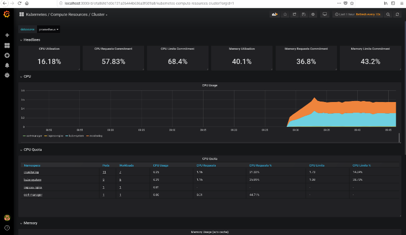

Updated September 2020
In a production Kubernetes deployment it is necessary to make it easier to monitor the status of the cluster effectively. Kubernetes provides Prometheus to gather data from the different components of Kubernetes and Grafana to access those data and provide real-time plotting and inspection capability. Moreover, they both provide systems to send alerts in case some conditions on the state of the cluster are met, i.e. using more than 90% of RAM or CPU.
The only downside is that the pods that handle monitoring consume some resource themselves, so this could be significant for small clusters below 5 nodes or so, but shouldn’t be a problem for typical larger production deployments.
Both Prometheus and Grafana can be installed separately with Helm recipes or using the Prometheus operator Helm recipe, however those deployments do not have any preconfigured dashboards, it is easier to get started thanks to the kube-prometheus project, which not only installs Prometheus and Grafana, but also preconfigures about 10 different Grafana dashboards to explore in depth the status of a Kubernetes cluster.
The main issue is that customizing it is really complicated, it requires modifying jsonnet templates and recompiling them with a jsonnet builder which requires go, however I don’t foresee the need to do that for most users.
Unfortunately it is not based on Helm, so you need to first checkout the repository:
git clone https://github.com/coreos/kube-prometheusand then follow the instructions in the documentation, copied here for convenience:
kubectl create -f manifests/setupWait a few minutes, then:
kubectl create -f manifests/This creates several pods in the monitoring namespace:
kubectl get pods -n monitoring
NAME READY STATUS RESTARTS AGE
alertmanager-main-0 2/2 Running 0 13m
alertmanager-main-1 2/2 Running 0 13m
alertmanager-main-2 2/2 Running 0 13m
grafana-9d97dfdc7-zkfft 1/1 Running 0 14m
kube-state-metrics-7c7979b6bc-srcvk 4/4 Running 0 12m
node-exporter-b6n2w 2/2 Running 0 14m
node-exporter-cgp46 2/2 Running 0 14m
prometheus-adapter-b7d894c9c-z2ph7 1/1 Running 0 14m
prometheus-k8s-0 3/3 Running 1 13m
prometheus-k8s-1 3/3 Running 1 13m
prometheus-operator-65c44fb7b7-8ltzs 1/1 Running 0 14mThen you can setup forwarding on your laptop to export grafana locally:
kubectl --namespace monitoring port-forward svc/grafana 3000Access localhost:3000 with your browser and you should be able to navigate through all the statistics of your cluster, see for example this screenshot. The credentials are user admin and password admin.

From the “Home” page, you can access all the preconfigured dashboards by clicking on the top “Home” button, it will show a searchable list of all available dashboards.
Access the UI from a different machine
In case you are running the configuration on a remote server and you would like to access the Grafana UI (or any other service) from your laptop, you can install kubectl also your my laptop, then copy the .kube/config to the laptop with:
scp -r KUBECTLMACHINE:~/.kube/config ~/.kubeand run:
ssh ubuntu@$IP -f -L 6443:localhost:6443 sleep 3h &from the laptop and then run the port-forward command locally on the laptop.
Monitor JupyterHub
Once we have deployed JupyterHub with Helm, we can pull up the “namespace” monitor and select the jhub namespace to visualize resource usage but also usage requests and limits of all pods created by JupyterHub and its users. See a screenshot below.

Setup alerts
Grafana supports email alerts, but it needs a SMTP server, and it is not easy to setup and to avoid being filtered as spam. The easiest way is to setup an alert to Slack, and optionally be notified via email of Slack messages.
Follow the instructions for slack on the Grafana documentation
- Create a Slack app, name it e.g. Grafana
- Add feature “Incoming webhook”
- Create a incoming webhook in the workspace and channel your prefer on Slack
- In the Grafana Alerting menu, set the webhook incoming url, the channel name

Configure ingress
It is also possible to expose Grafana to the web via an Ingress, the easiest is to have a dedicated URL just for grafana (different from the URL of JupyterHub), in this case, see an example ingress. It is important that it is in the monitoring namespace.
The configuration also supports HTTPS, for that to work you also need to create an Issuer in the namespace monitoring (also rename the secret key), for more details see the tutorial on deploying letsencrypt.